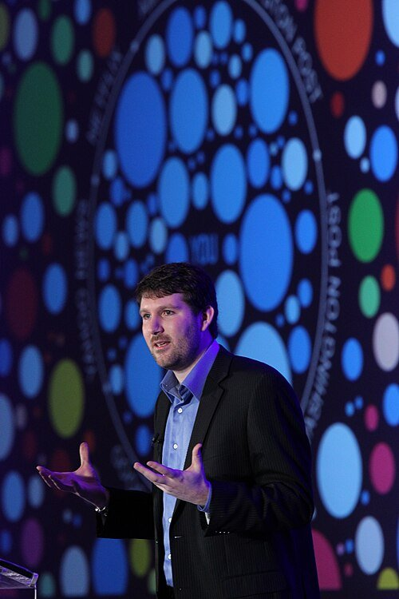
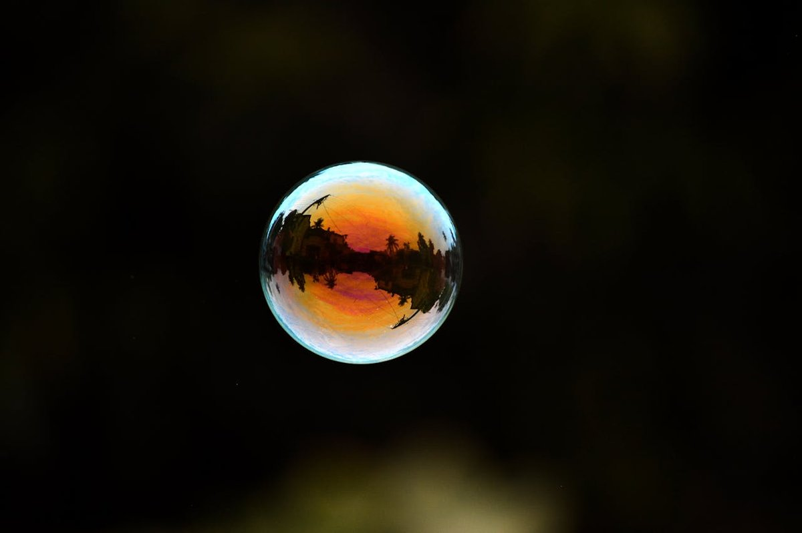

科学と文化
同じキーワードで検索しても、隣の人とは違う結果が返ってくる。誰も壁を作った覚えはないのに、気がつくと全員が自分専用の部屋に閉じ込められている。フィルターバブル——2011年、ひとりの活動家がそう名付けた。
イーライ・パリサーが著書『The Filter Bubble』とTED Talkで概念を世に出す
同じ年の1月、チュニジアでベン=アリ政権が崩壊。2月、エジプトでムバラクが辞任。アラブの春の年。
ある晩、家族と同じ話題になった。同じニュースを検索したのに、スマホの画面に出てくる記事の順番がまるで違う。最初の3件が、ひとつも重ならない。
似た経験は、たぶん誰にでもある。友人のおすすめ動画、親のSNSのタイムライン、自分のもの。同じサービスを使っているはずなのに、見えている景色はひとりひとり別の部屋のようだ。
世界は、もう同じ形をしていない。
アルゴリズムが作る泡と、自分で選んで作る反響室。似ているが、同じものではない。そして最も厄介な方は、たぶん技術の側ではない。
2010年の春、メキシコ湾で石油掘削施設「ディープウォーター・ホライズン」が爆発し、史上最悪級の原油流出が続いていた。その頃、ネット活動家のイーライ・パリサーEli Pariser
1980年生まれのアメリカの活動家・作家・起業家。MoveOn.org元事務局長、Avaaz共同創業者、Upworthy共同創業者。2011年の著書『The Filter Bubble』とTED Talkで同名概念を世に出した。は、友人二人に頼んで同じ実験をしてもらった。Google で「BP」(ブリティッシュ・ペトロリアム、メキシコ湾で事故を起こした当事者であり、世界的な石油メジャーの一つ)とだけ検索し、最初の1ページ目のスクリーンショットを送ってほしい——ただそれだけのことだった。
二人は年齢も学歴も政治的傾向も似ていた。けれど、返ってきた画面は別物だった。片方のトップには、流出事故と環境被害のニュース。もう片方のトップには、BP株の投資情報が並んでいた。同じ検索窓、同じキーワード、同じ国、同じ日。違うのは、画面を見ている人間の過去のクリック履歴だけだ。
同じ検索、違う世界
パリサーが2011年の著書で紹介した、二人の友人による「BP」検索の比較。同じ検索語から、まったく別の世界が立ち上がる。

Eli Pariser
Activist · Author
1980年生まれ。政治活動家であり起業家。MoveOn.org元事務局長、Avaaz・Upworthy共同創業者。2011年の著書『The Filter Bubble』と同年3月のTED Talkで同概念を世に出した。現在はNew_ Public共同代表として「民主主義と親和的なデジタル公共空間」の設計に取り組む。Wikipedia →
Photo: Al Diaz / Knight Foundation, CC BY-SA 2.0
パリサーはこれに「フィルターバブル」という名前をつけた。個人化アルゴリズムが、ユーザーの過去の行動履歴から好みを推定し、見せる情報を自動的に絞り込む。ひとりひとりの周りに、目に見えない情報の泡が膨らんでいく。泡の中にいる限り、その壁は感じられない。泡は壁だと気づいたときには、もう外の景色がどうなっていたか思い出せなくなっている。
似た警告は、実はもう少し前からあった。法学者のキャス・サンスティーンCass Sunstein
アメリカの法学者。ハーバード大学教授。行動経済学・法と公共政策の研究で知られ、2001年の著書『Republic.com』でインターネットが「エコーチェンバー」を生むと警告した。Pariserの『The Filter Bubble』(2011)の10年前。は2001年の著書『Republic.com』で、ネット時代の人は自分の好きな意見だけを集めた「共鳴室(echo chamber)」に閉じこもるようになる、と警告していた。ふたつの概念はよく似ていて、実際ほとんど同じ意味で使われている。だが、厳密には指しているものが違う。
| フィルターバブル | エコーチェンバー | |
|---|---|---|
| 名付け親 | イーライ・パリサー(2011) | キャス・サンスティーン(2001) |
| 誰が絞るか | アルゴリズム(自動的に) | 自分(意識的に) |
| ユーザーの役割 | 受動 — 気づかないうちに | 能動 — 選んでそこに入る |
| 比喩 | 透明な壁に囲まれた部屋 | 同じ声が反射して返ってくる部屋 |
| 脱出しやすさ | 壁があることに気づきにくい | 居心地がよくて出る動機がない |
フィルターバブルは、自分では壁を作っていない。アルゴリズムアルゴリズム
問題を解くための手順。ここでは、ユーザーの過去のクリックや滞在時間などのデータから、次にどの情報を上位に出すかを決める計算ルールのこと。推薦システムの中核。が過去の選択的接触選択的接触(selective exposure)
社会心理学の用語。自分の既存の意見を支持する情報を優先的に選び、反する情報を避ける傾向のこと。1960年代から研究されている基本的な人間の習性。のパターンから「たぶんこれが好き」と推定し、気づかないうちに壁を建てる。一方エコーチェンバーは、自分で友達を選び、自分でアカウントをフォローし、自分で居心地のいい部屋に入っていく。どちらも結果としては同じ場所に着地する——異論が届かない場所に。
どうして、そもそも情報の偏りが生まれるのだろう。答えの半分は、人間の古い習性の中にある。社会学では昔から「同質性同質性(homophily)
社会学の概念。人は自分と似た属性・意見・趣味の他者と結びつく傾向がある、という現象。友人関係、結婚、SNSのフォロー関係、どれにも強く見られる。「類は友を呼ぶ」の学術版。」と呼ぶ。人は、自分と似た人と結びつきやすい。似た政治観、似た趣味、似た語彙、似た笑いのつぼ。SNS時代にそれが始まったわけではなく、中学校の教室でもそうだった。変わったのは、好きな人たちだけで閉じた空間を作るコストが、ほぼゼロになったことだ。
友人ネットワークの二つの形
左は異なる意見(色)同士が繋がった網。右は同質のクラスタが固まり、橋渡しが細い破線ひとつ分しかない網。後者のような構造が、情報の壁のない閉鎖空間を作る。
同じ意見の人だけで固まっているネットワークでは、誰かが何かを投稿すると、それが同じ色の点の間で何度も拡散する。反対意見は、そもそも到達しない。検索エンジンや推薦システムは、この人間の傾向を「入力データ」として受け取っている。ユーザーが似た色の記事ばかりクリックすれば、アルゴリズムは「この人には似た色を優先的に出そう」と学習する。ここに、技術と習性のフィードバックループが立ち上がる。
ひらたく言えば、アルゴリズムが一方的にバブルを作っているわけではない。アルゴリズムは、自分のクリックを反射して返してきているだけだ。鏡は、覗いた人の顔を映しているにすぎない。けれど、映されたものが次の自分の選択を決め、その選択がまた次の表示を決める。鏡は、やがて自分で像を歪ませ始める。
スライダーを動かすと、アルゴリズムがこの過去をどれだけ強く反映するかに応じて、次に表示される18枠のフィードが変わる。左に振るほど過去は無視され、右に振るほど過去の癖が色濃く反映される。
スライダーを右に振ると、赤の記事が画面を埋め尽くし、青の記事がほぼ消える。これが「過去のクリックで、見える世界の形が決まる」ということだ。個人化ゼロでも完全に均等にならないのは、現実のニュース供給自体に偏りがあるため。
よくある誤解
アルゴリズムがすべて悪い。個人化をオフにすれば、私たちは本来のバランスの取れた情報空間に戻れる。
実際は
アルゴリズムをオフにしても、自分で好きな記事だけクリックする習性は残る。2015年のFacebookの研究では、アルゴリズムよりも自分の選択の方が、異論への接触を大きく減らしていた。
よくある誤解
フィルターバブルとエコーチェンバーは、同じことを別の言葉で言っているだけだ。
実際は
前者は機械の側の問題、後者は人間の側の問題。どちらが支配的かで、取るべき対処も変わる。よく混同されるが、もともとは別の概念として提案された。

ここで、自分の指で泡を膨らませてみてほしい。下のシミュレーターは、9つのニュース記事を並べる。中には中立のもの、やや左寄りのもの、やや右寄りのものが等分に混ざっている。あなたは「読んでみたい」と思うものを、毎ラウンド1つだけクリックする。
クリックされた瞬間、裏側のアルゴリズムは静かに学習する。次のラウンドでは、あなたが前に選んだ種類の記事が、ほんの少しだけ多めに出る。もう1ラウンド進むと、もう少し多めに。10ラウンド回したとき、フィードは最初の姿とどれほど違っているだろう。
自分のクリックが、次に見る世界をどう変えるかを10ラウンドで体験する。
フィードに出ている意見の分布L 33% / C 33% / R 33%
自動で回すボタンを押すと、最初のクリックで選んだ色を毎回選び続けるユーザーの挙動を10ラウンド分一気に再生する。ほとんどの場合、最初はほぼ等分だった分布が、最後には3分の2以上が同じ色に染まっている。ここで注目してほしいのは、アルゴリズムが極端に強い設定をしているわけではないということだ。毎ラウンドほんの少しずつ好みに寄せているだけで、10回重ねれば、景色はここまで変わる。
もうひとつ、試してほしいことがある。リセットしたあと、今度はわざと反対側をクリックし続けてみる。泡は、壊せるだろうか。動かしてみるとわかるが、少しの逆流では足りない。泡を元に戻すには、同じ回数だけ反対を選び続けなければならない。壁の外に出るのは、壁の中に入るより何倍も意志の力が要る。
2015年、Facebook のデータサイエンティストたちが Science 誌に論文を出した。著者はエイタン・バクシー、ソロモン・メッシング、レイダ・アダミック。自分たちの政治的立場を明示している米国のユーザー 1,010 万人を対象に、友人が共有したニュース、Facebook のニュースフィードが実際に表示したニュース、そして本人がクリックしたニュースの3段階を調べた。目的はひとつ——フィルターバブルは本当に存在するか。
3つの段階での「反対意見への触れ率」の落ち方
結果は、技術決定論を信じたい人には不都合なものだった。友人ネットワークが共有したニュースと比べて、Facebook のアルゴリズムは異なるイデオロギーのニュース(cross-cutting content)への露出を約15%減らしていた。確かに、アルゴリズムは泡を作っていた。けれど、その先で起きていることの方がはるかに大きかった——ユーザー本人がクリックする段階で、さらに約70%が消えていた。
アルゴリズムによる減少
−15%
フィードに実際に表示される段階で、反対意見への露出がこれだけ減る
自分のクリック選択による減少
−70%
表示された反対意見のうち、この割合を自分でクリックしない
この研究は当時、大きな論争を呼んだ。Facebook が自社の問題をうやむやにしているだけだという批判も強かった。実際、論文の著者3人は全員 Facebook の社員であり、利益相反の問題は指摘された。けれど重要なのは、その後 Twitter や YouTube を対象にした独立研究もおおむね似た方向の結果を出していることだ。技術は確かに作用しているが、それ以上に人間の確証バイアス確証バイアス
自分の既存の信念を支持する情報を優先的に探し、反する情報を軽視する傾向。1960年代のウェイソン実験以来、最もよく再現されている認知バイアスのひとつ。Qualia Journalの別記事「確証バイアス」でも詳しく扱っている。が効いている。
The filter is invisible by design. It shows you what it thinks you want to see, but you don't see what it decided you don't want to see.
フィルターは設計上、目に見えない。「あなたが見たいだろう」と判断したものを見せてくるが、「あなたは見たくないだろう」と判断して隠したものは、あなたには見えない。
— Eli Pariser, The Filter Bubble (2011)
1995
Negroponte — 「Daily Me」の構想
MITのニコラス・ネグロポンテが著書『Being Digital』で、一人ひとりの興味に完全に合わせた新聞「Daily Me(私の日刊紙)」という構想を肯定的に提示する。当時はまだ希望の比喩だった。
2001
Sunstein — 『Republic.com』でエコーチェンバーを警告
法学者キャス・サンスティーンが、Negroponte の構想を反転させた警告として「エコーチェンバー」概念を提唱。ネットは民主主義に必要な異論への偶発的な遭遇を奪うかもしれない、と書いた。
2011
Pariser — 『The Filter Bubble』とTED Talk
活動家のイーライ・パリサーが3月のTED Talkで「BP検索」の実例を示し、同年5月に書籍を刊行。Google は57種類のデータを使ってユーザーをプロファイリングしている、と内部情報を引用した。同じ年、アラブの春が中東を駆け抜けていた。
2015
Bakshy et al. — Science誌の反証
Facebook の3名の研究者が1,010万ユーザーを対象にした大規模実証研究をScience誌に発表。アルゴリズムの影響よりも、ユーザー自身のクリック選択の方が大きいと報告する。論争を呼んだが、その後の独立研究も同じ方向を支持している。
2016
米大統領選と「Brexit」投票 — 概念の一般化
トランプ当選とBrexit 決定をきっかけに、「フィルターバブル」「エコーチェンバー」という語が学術用語を離れ、政治記事とSNSの日常語になる。オバマは退任演説で「自分の泡に引きこもる方が安全になった」と述べた。
2023
Meta・Nyhan らの大規模実験
2020年米大統領選の前後に、Meta の協力で研究者らが数万人のユーザーに対するアルゴリズム介入実験を実施。ニュースフィードを時系列順に戻しても、政治的態度や知識はほとんど変わらないという、やはり技術決定論に不利な結果が Science と Nature に掲載された。
もう一度整理しておく。アルゴリズムは無実ではない。透明な壁を積み重ねているのは確かに機械の側だ。けれど、その壁にいちばん多く煉瓦を足しているのは、自分自身の指先なのかもしれない。サンスティーンが警告したエコーチェンバーと、パリサーが名付けたフィルターバブル——ふたつは別々に語られる概念だったが、実際の世界では互いを強化し合っている。機械がユーザーの好みを学び、ユーザーがその学びをさらに強化し、機械がまたその結果を次の表示に織り込む。鏡と観客の区別が、だんだん曖昧になっていく。
Personalization filters serve up a kind of invisible autopropaganda, indoctrinating us with our own ideas.
個人化フィルターは、いわば見えない自動プロパガンダだ。私たち自身の考えで、私たち自身を洗脳する。
— Eli Pariser, The Filter Bubble (2011)
ここで素朴な期待をひとつ潰しておきたい。「自覚すれば防げる」という期待だ。研究の多くは、この期待を支持していない。フィルターバブルの存在を知った人でも、次の10分間に自分のSNSを開くとき、やはり同じ癖で同じ記事をタップしてしまう。知識は、習慣を止めるには小さすぎる力だ。
では、何ができるのか。万能ではないが、いくつかの手がかりはある。自分が「当然」と思う意見に反対している人のアカウントを、いくつか意識的にフォローしておく。検索するとき、ときどき別のブラウザや別のアカウントで同じ語を試してみる。推薦アルゴリズムに対して、時どきあえて反対側をクリックしてノイズを入れる。どれも地味で、どれも一回では効かない。泡を膨らませる速度と同じだけ、しぼませる手間がかかる、というだけのことだ。
作品・社会への登場
『監視資本主義:デジタル社会がもたらす光と影』(2020, Netflix)
Jeff Orlowski監督のドキュメンタリー。元Google, Facebook, Pinterest などの社員が登場し、推薦アルゴリズムが人間の注意をどう設計しているかを告発する。フィルターバブルという語が日常語として定着した作品のひとつ。
オバマ米大統領 退任演説(2017年1月)
演説の中盤で「自分の泡に引きこもる方が安全になった」と述べ、民主主義の前提としての「異論への偶発的な遭遇」の重要性を訴えた。フィルターバブルという語が政治演説で使われた最初期の例。
The Filter Bubble: What the Internet Is Hiding from You
概念の原典。BP検索の逸話はここから。Google が個人化に使っている57種類のデータへの言及など、当時としては内部事情に踏み込んだ記述が多く、読むと10年前のネットの空気まで立ち上がる。
Exposure to ideologically diverse news and opinion on Facebook
1,010万ユーザーを対象にした大規模実証研究。アルゴリズムと自分の選択のどちらが異論を遠ざけているか、の分解が数字で読める。論争の渦中に置かれた論文だが、その後の独立研究も同じ方向を支持している。
Republic.com
エコーチェンバー概念を提唱した原典。2017年の『#Republic』で増補改訂。民主主義には「偶発的な異論への遭遇」が必要だ、という議論の骨格はここにある。
Filter Bubbles, Echo Chambers, and Online News Consumption
Bakshy et al. と独立に、米国ユーザー5万人のブラウザ履歴を解析した研究。ソーシャルメディアと検索は確かにイデオロギー的分離を増やすが、その効果は絶対値としては小さいと結論する。反証系の代表的論文。
Beware online "filter bubbles" — TED Talk
書籍より前に概念を世に広めた9分のトーク。「Egypt」で検索したときに友人間で結果がどれだけ違ったか、という実例を画像付きで提示しており、本が長すぎる人はまずこちらを観ると全体の空気がつかめる。
e. Tamaki